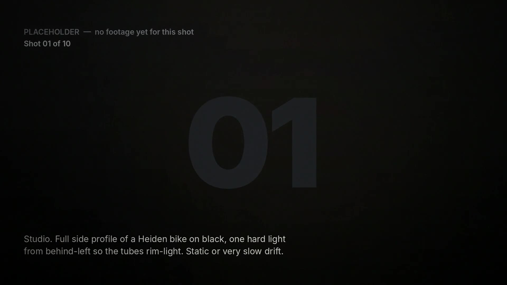

Carbon tubes and 3D-printed lugs, designed and made to measure by hand.
Geometry, fit and finish are worked out with you, then the frame is built from carbon tubes joined with lugs designed in-house and 3D printed. One bike at a time, in Brisbane.
Start a build